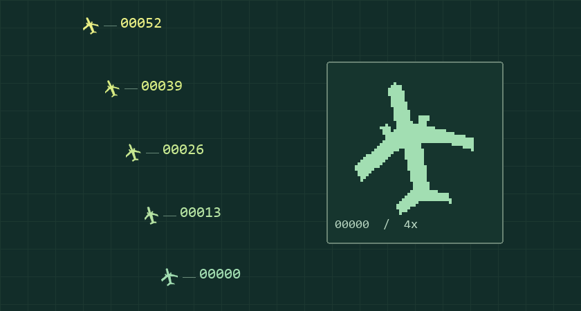

CroBIM-V / IEEE TGRS 2026
RS-RVOS Bench
Remote sensing referring video object segmentation dataset
Given a satellite video and a description of an object in its first frame, segment that same object in each frame where it is visible. RS-RVOS Bench pairs referring expressions with instance masks on SAT-MTB sequences.
airplane_51INSTANCE 01

“wide bodied aircraft at bottom-center”
108Satellite videos
24,366Annotated frames
891Referring expressions
11Object classes
Use the dataset
- Download the v1.0 annotation ZIP and extract it. It includes instance masks, expressions, split lists and verification scripts.
- Get the aircraft and ship imagery from the official SAT-MTB download page.
- Follow the quick start to verify the annotations and match the source frames by hash.
Train and test splits
| v1.0 split | Videos | Expressions |
|---|---|---|
| Train | 79 | 702 |
| Test | 29 | 189 |
The paper reports 111 sequence entries. The public v1.0 release contains 108 videos and uses the fixed split above. Curation details ↗
Cite RS-RVOS Bench
Haochen Jiang, Yuzhe Sun, Zhe Dong, Tianzhu Liu, Yanfeng Gu.
CroBIM-V: Memory-Quality Controlled Remote Sensing Referring Video Object Segmentation.
IEEE Transactions on Geoscience and Remote Sensing, 64, 1–16 (2026).